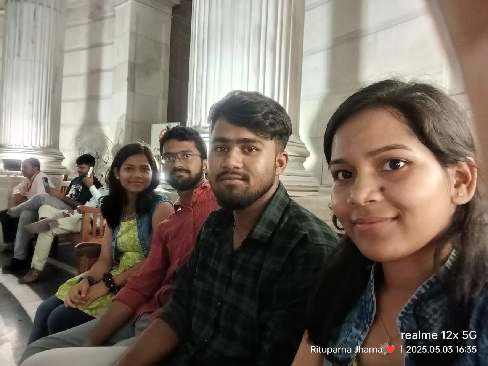
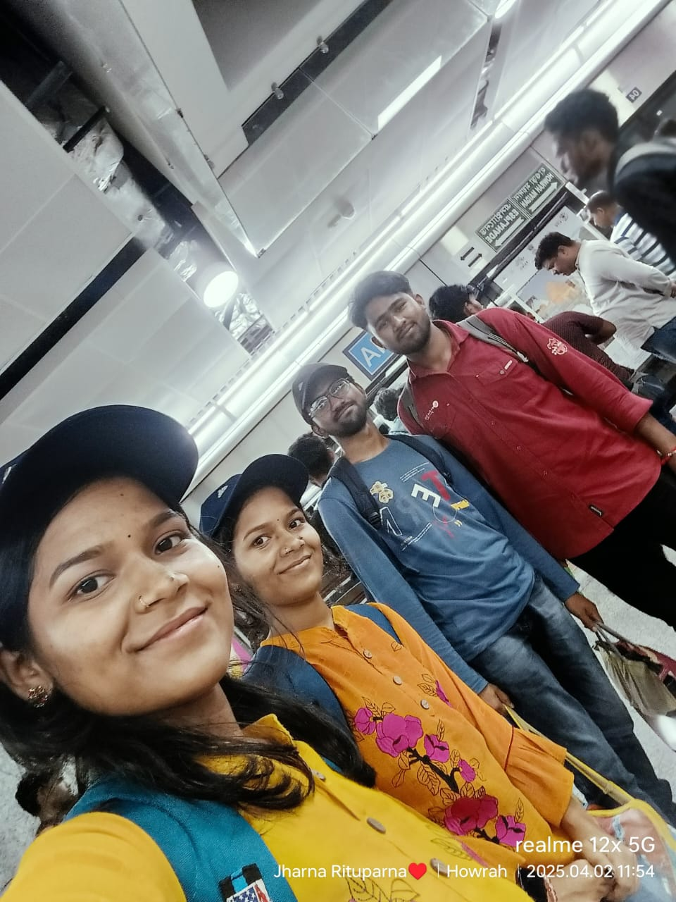
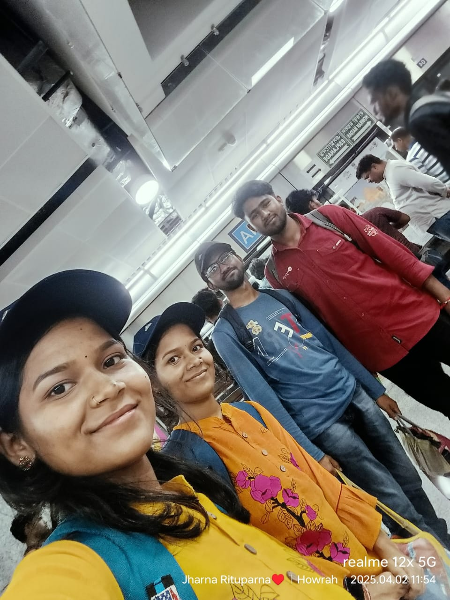
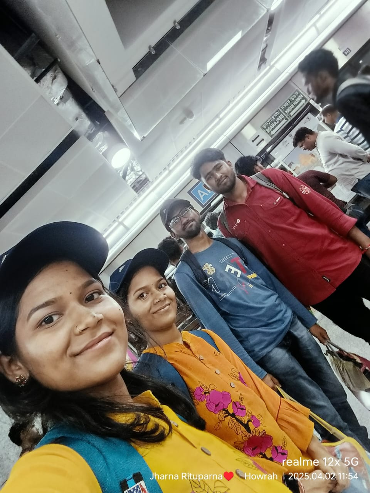

üì∏ Our Beautiful Moments

 



Timeline of Memories
2nd October, 2024
First time we met - a moment to remember forever.
ITI More, Kalyani
22nd March, 2024
Our first group trip together — unforgettable adventures
Lahiri Babar Ashram
26th April, 2025
Our first cycle ride.
Gangar Ghat, Kalyani
3rd May, 2025
Victoria Trip — A lifetime memory.
Victoria Memorial, Kolkata
20th June, 2025
Our unpredictable tour — Dakshineswar Temple.
Dakshineswar, Kolkata
Hope this page be filled with thousand of memories like these...ü§ç
⬅ Back to Home Back to Previous Page Brishti's Page Barsha's Page Twinny's PageFeedback